I've always had very wild dreams about doing something that could benefit others such as becoming a doctor.
Growing up in the twentieth century with ideas and knowledge at every corner lead me to discover many more job choices that were not only related to medicine but were also as beneficial to humankind.
Like every other students, I have my weak and strong points in the education system. Biology and chemistry were two of those subjects
I never really spent hours and hours to try to make sense of, unlike math. I found it really logical and easy to understand which really drew me into it.
Nina Vannaxay
17 | Potato | Superhero for dogs
About Me
Education
Born in Bangkok, Thailand
Lives & studies in Bangkok, Thailand
2003-2015: FRENCH INTERNATIONAL SCHOOL OF BANGKOK
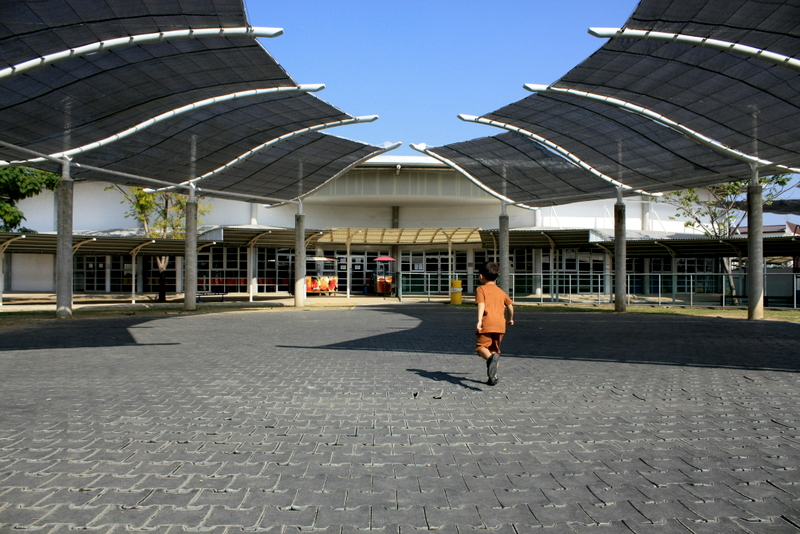
I first attended the French International School of Bangkok in 2002. I have gotten my Brevet Certificate -- which is a certificate we get once we take the french Brevet test at the end of grade nine -- with the second highest honour called “Mention Bien” (which means “Good”)
I first attended the French International School of Bangkok in 2002. I have gotten my Brevet Certificate -- which is a certificate we get once we take the french Brevet test at the end of grade nine -- with the second highest honour called “Mention Bien” (which means “Good”)
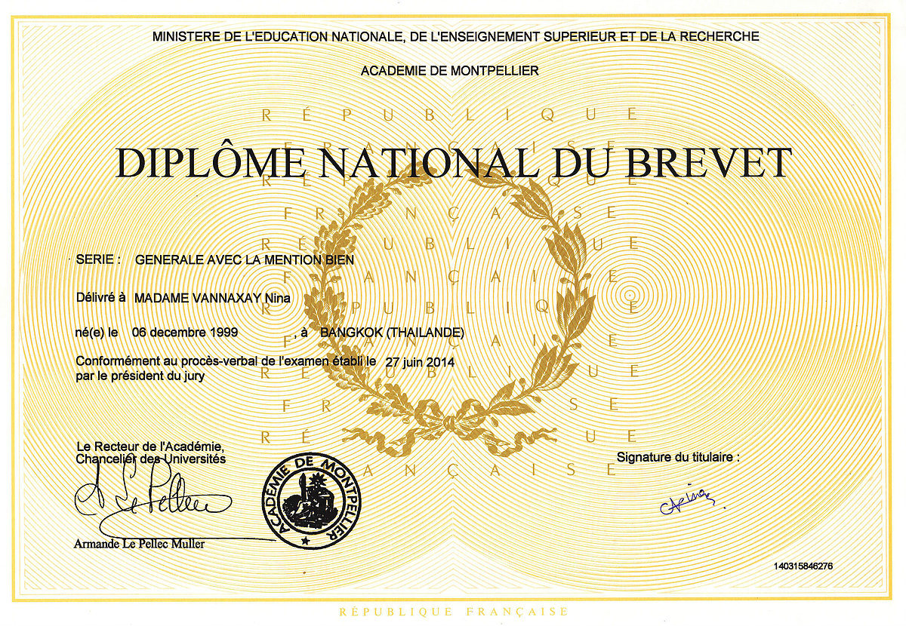
2015-2018: Panyarat Highschool
I've always had very wild dreams about doing something that could benefit others such as becoming a doctor.
Growing up in the twentieth century with ideas and knowledge at every corner lead me to discover many more job choices that were not only related to medicine but were also as beneficial to humankind.
Like every other students, I have my weak and strong points in the education system. Biology and chemistry were two of those subjects
I never really spent hours and hours to try to make sense of, unlike math. I found it really logical and easy to understand which really drew me into it.
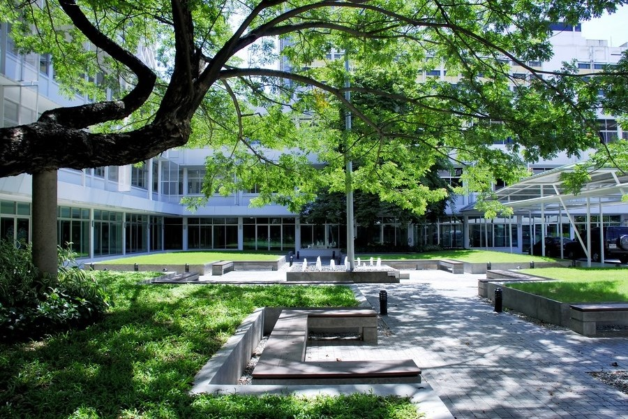
Interests
Growing up, I’ve always been the artistic child in the family. I fell in love with it, regardless of the type of art.
I loved drawing, reading, writing but also, playing musical instruments. I have started learning violin at the age of 12 and which is today one of my biggest prides.
Reading and writing was a hobby I developed later in life, at the age of 12 I somehow grew this enormous love for the english language,
-- probably because it is a lot easier than French -- and started writing my own short novels following by brief poems.
It allowed me to progress massively in english over a short period of time.
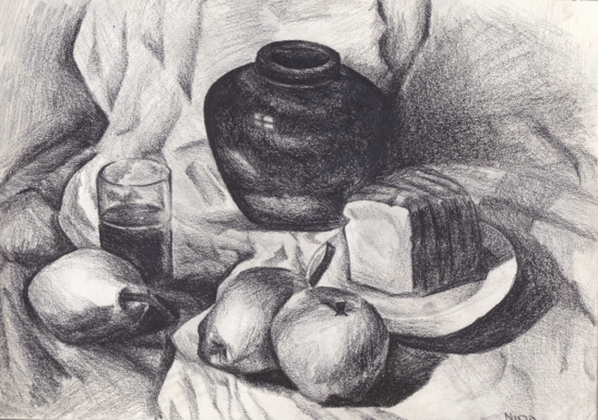
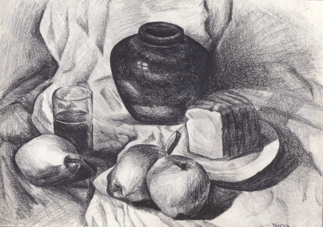
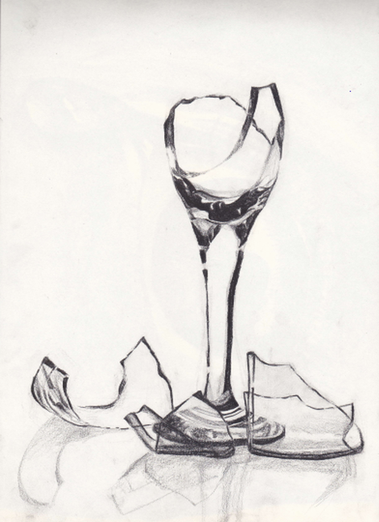
My all time favorite hobby, my fondness.
I’ve been put in a drawing school as soon as seven years old and I loved everything about it.
It was a way of expressing my feelings as I was and still am, a shy person.
I used to explore every corners of it,and found out I loved drawing portraits and still lifes the most.
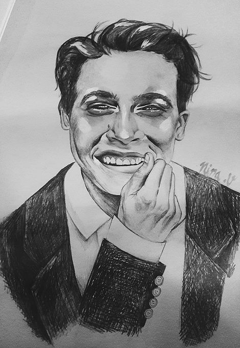
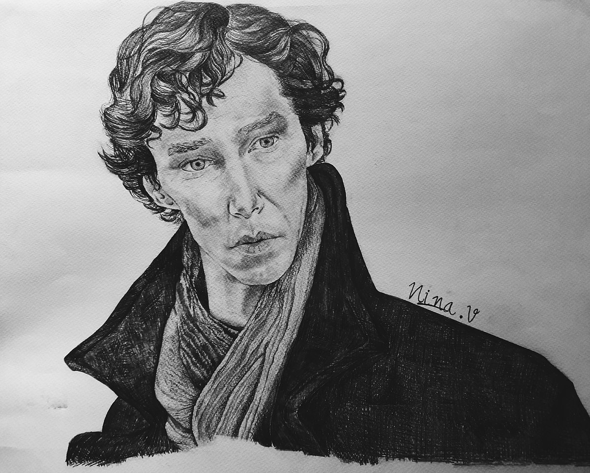 “O nce I was out of the castle nothing around me ever felt more euphoric. The stellar sky a few light years away or the wind brushing over my trembling hands soothing them off. There was a salty smell to it as we were not far from the sea. I walked against the wind with naked feets. Humid grass, cold stones and finally tingling sand, these were all the sensations I felt. For a moment again, I felt whole, these little things filled me in. There were no more trees or greens in sight It was plain darkness and I blended in pretty well. I wondered if anyone had noticed my absence. It had been a while since I haven’t gone out of the castle without any guards following me. Damn how free I felt. Me and my sorrows all over again." - Killian & Kara page 14
Achievements
English
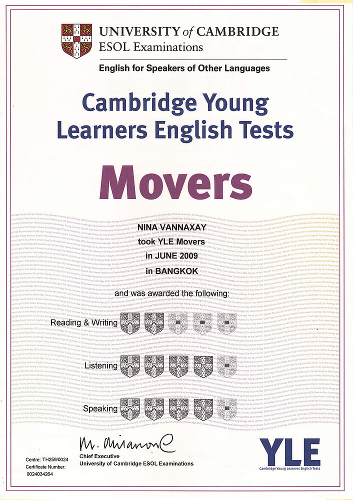
YLE Movers
2009
10 Years Old
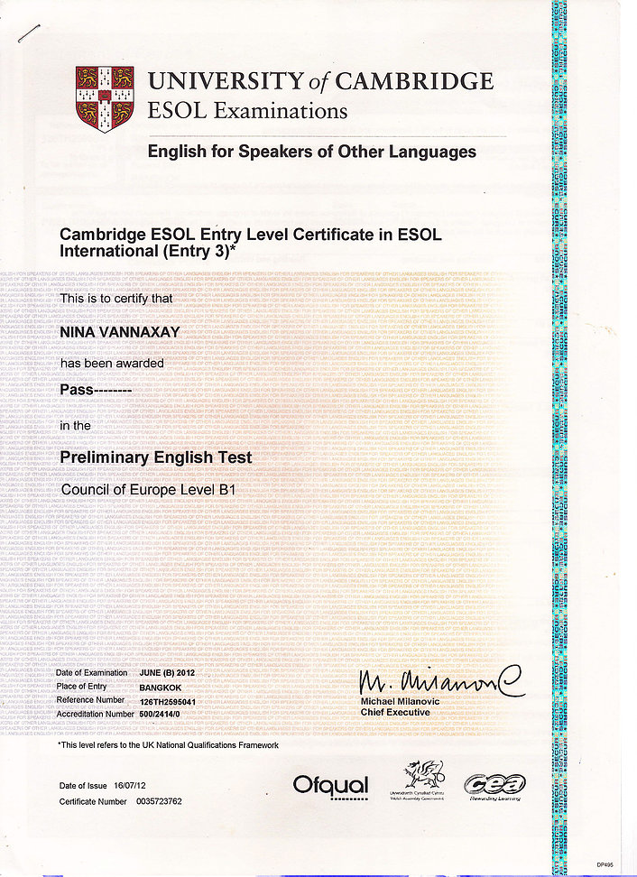
Cambridge Test PTE
2013
14 Years Old
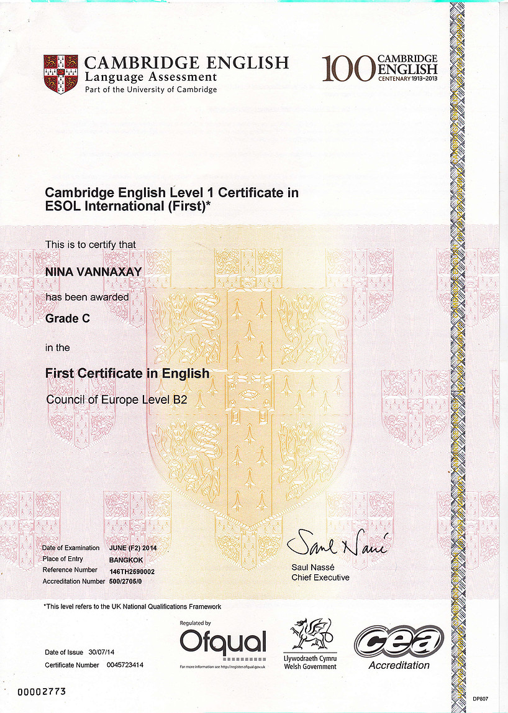
Cambridge Test FCE
2014
15 Years Old
Certificate of Participation
2016
16 Years Old
Chinese
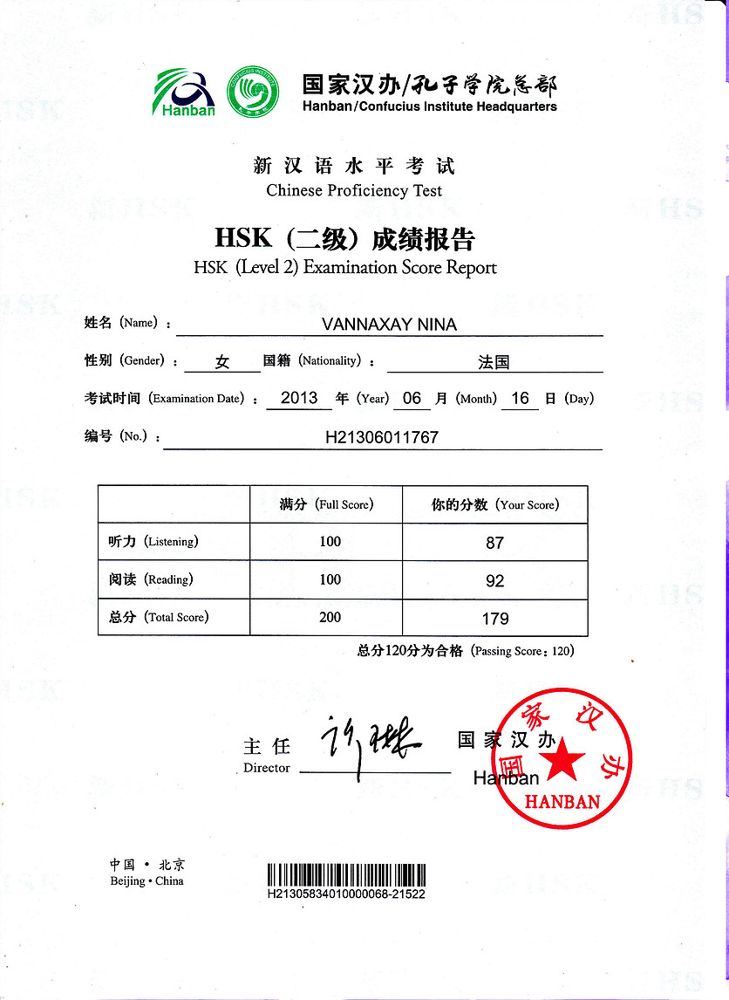
HSK 2
2013
14 Years Old
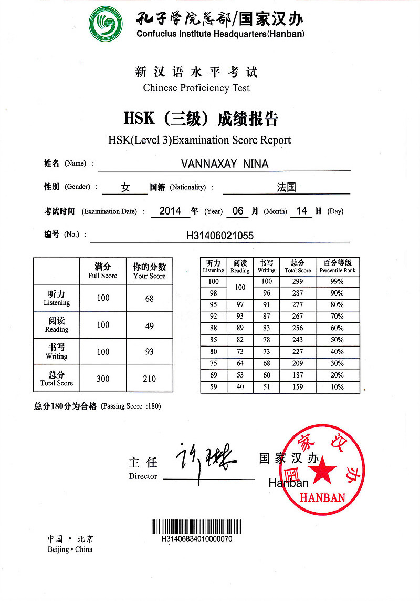
HSK 3
2014
15 Years Old